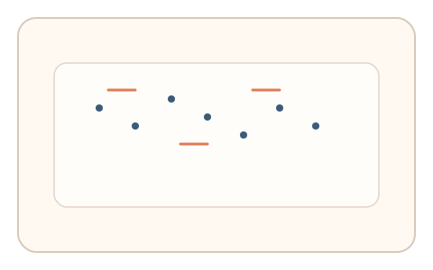
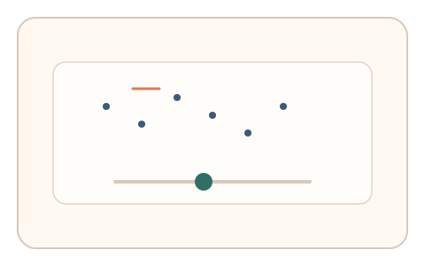
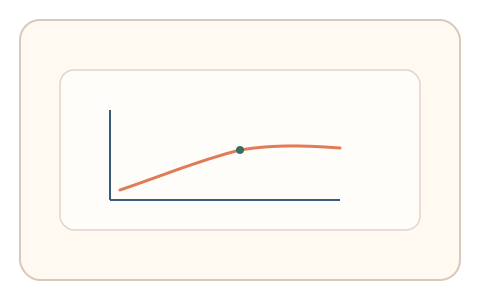

#43
视觉思考范式：时域/适应/残影
已扩展
运动一致性门槛
随机点阵中调节一致性比例至可稳定判断方向，以临界点与微调行为验证真实性。
概念原文
随机点阵中有部分同向运动，用户调节一致性比例直到“能稳定判断方向”；记录临界点与微调次数。
以运动一致性阈值和调整行为作证据，而非方向判断本身。
研究背景
运动一致性阈值反映视觉系统对全局运动的整合能力，存在稳定的主观临界点。通过测量调节曲线与临界点，可形成可重复的感知特征。
核心机制
- 随机点阵中部分点同向运动。
- 用户调节一致性比例直到能稳定判断方向。
- 记录临界点与微调次数。
- 分析临界区间与收敛曲线。
用户流程
- 步骤 1：用户看到随机点阵运动。
- 步骤 2：用户调节一致性比例。
- 步骤 3：系统记录临界点与判定。
判定信号
一致性临界点
人类对全局运动的阈值存在稳定范围。
微调次数与回撤节奏
真实判断会出现试探与回拉。
判定逻辑
结合临界点区间与微调曲线判定；临界点异常低或调节过快判异常。
对抗面
- 脚本直接设置固定一致性比例
- 重放真实用户的调节轨迹
防御与缓解
- 随机化点阵密度与运动方向
- 加入短时扰动与噪声降低模板化
- 叠加微时序与轨迹信号进行多信号判定
可达性与风险
提供更慢速度或替代任务，避免对运动敏感用户造成不适。
- 长时间观看点阵可能引起眩晕
- 显示设备刷新率影响运动一致性
可视化状态

状态 1：点阵运动
部分点同向运动。

状态 2：一致性调节
用户调节一致性比例。

状态 3：临界判定
记录临界点与微调曲线。
参考资料
Random dot motion
说明运动一致性阈值与点阵实验。
Motion perception
说明全局运动整合机制。